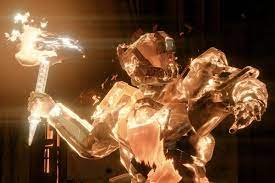
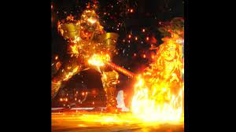

Solar is considered one the the most powerful subclasses along with void. A Titan that uses Solar is called a Sunbreaker. There are one of two supers to choose from. Wreak havoc on your enemies with the Hammer of Sol.  Throw your blazing hammers at your enemies and watch them be incinerated by the explosions. Want a more melee touch? Summon the Flaming Maul.  Crush your enemies with the force of an earthquake, spinning the Maul in a circle around you, damaging nearby targets. Slam the maul to the ground and create a cyclone of flames that seeks targets.
There are three basic grenades to choose from.
Incendiary Grenade — A grenade that sets enemies on fire when it explodes.
Thermite Grenade — A grenade that sends forward a burning line of fire.
Fusion Grenade — An explosive grenade that attaches to enemies.
Visit Ikora Rey in the Tower to unlock more grenades.